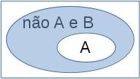
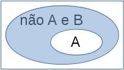

Na seção apresento os princípios da lógica booleana, lembrando o que é tabela verdade
e as leis de De Morgan.
Sentenças lógicas e conjuntos
A lógica é essencial para a matemática como ciência, ela ajuda a estruturar a linguagem matemática.
Pode-se considerar cada afirmação matemática como uma sentança lógica, um teorema pode ser visto como uma
sentença do tipo A implica B.
De outra parte, cada sentença lógica pode ser examinada sob o de vista de conjuntos.
No exemplo A implica B, se entendermos A e B como conjuntos, a implicação indica que
o conjunto A está contido no conjunto B. Isso está ilustrado na figura 1.a.
Existem três operadores básicos para lógica, a negação, a conjunção e a disjunção,
respectivamente os operadores não, e e ou.
Representação dos operadores lógicos nas linguagens C, Python e iVProg:
Operador
C
Python
iVProg
não
!
not
nao
e
&&
and
e
ou
||
or
ou
Para conhecer mais
Assim a sentença não A pode ser entendida como o complemento do conjunto A, ilustrado na figura 1.b.
E podemos compor as sentenças, por exemplo, criando a sentença não A e B, ou seja, como conjunto, os elementos
que não estão em A e que simultaneamente estão em B, como ilustrado na figura 1.c.
A figura 1.a apresenta o conjunto B (azul mais claro), contendo o conjunto A.
A figura 1.b apresenta o complemento ao conjunto A (azul mais claro), ou seja,
os elementos que não estão em A.
A figura 1.c mostra a interseção (equivalente à disjunção) entre o complemento ao conjunto A e o conjunto B
(azul mais claro), ou seja, os elementos que estão no complemento de A com aqueles que
estão em B.
Do ponto de vista da lógica, cada sentença deve ser ou verdadeira ou falsa
(isto é, pode ocorrer apenas uma das duas opções - um "ou exclusivo").
Assim, dada uma sentença formada com k itens lógicos (ou sentenças elementares),
pode-se fazer uma tabela com k+1 colunas, sendo a primeira formada pelo item 1,
a segunda pelo item 2 e assim por diante. A coluna k+1 representa a sentença completa.
Nesse caso a tabela terá 2k linhas, cada linha terá uma combinação
possível para os valores verdadeiro ou falso.
O valor lógico na última coluna representará o resultado da frase.
Por exemplo, se a sentença tem um único item, existem duas linhas e a última coluna é precisamente o valor da primeira coluna.
Se a sentença tiver dois itens, então teremos 4 linhas e o valor lógico na última coluna é o resultado.
(isto é, pode ocorrer apenas uma das duas opções - um "ou exclusivo").
Assim, dada uma sentença formada com k itens lógicos (ou sentenças elementares),
pode-se fazer uma tabela com k+1 colunas, sendo a primeira formada pelo item 1,
a segunda pelo item 2 e assim por diante. A coluna k+1 representa a sentença completa.
Nesse caso a tabela terá 2k linhas, cada linha terá uma combinação
possível para os valores verdadeiro ou falso.
As tabelas abaixo representam as sentenças das operações básicas não A, A e B e A ou B.
Simplificaremos escrevendo "verd" para "verdadeiro" (1 em C e true em Python)
"fals" para "falso" (0 em C e false em Python).
A
não A
verd
fals
fals
verd
A
B
A e B
verd
verd
verd
verd
fals
fals
fals
verd
fals
fals
fals
fals
A
B
A ou B
verd
verd
verd
verd
fals
verd
fals
verd
verd
fals
fals
fals
Portanto, a negação inverte o valor lógico, a conjunção resulta em verdadeiro se, e somente se ambos
os itens são verdadeiro e a disjunção resulta falso se, e somente se ambos os itens forem falsos.
Note que tanto a disjunção quanto a conjunção são operações comutativas e associativas.
Comutativas:
A e B é o mesmo que B e A (produz a mesma tabela verdade);
A ou B é o mesmo que B ou A.
Associativas:
A e (B e C) é o mesmo que (A e B) e C;
A ou (B ou C) é o mesmo que (A ou B) ou C.
Do mesmo modo que na aritmética podemos compor expressões com diferentes operadores (como '+' e '-'),
também podemos compor sentenças misturando os três operadores.
Para isso é interessante perceber que valem as seguintes equivalências, denominadas
leis de De Morgan:
não (A e B) ≡ (não A) ou (não B) não (A ou B) ≡ (não A) e (não B)
Agora, tente montar as tabelas verdades para cada par de senteça. Observe que cada uma produz o mesmo resultado de seu par.
Algumas fontes para aprofundamento:
na WikiPedia examinar os vocábulos
De Morgan's laws ou
Teoremas de De Morgan.
Se desejar aprofundar o entendimento sobre a linguagem matemática
pegue a apostila do professor
Ricardo Bianconi.
 
